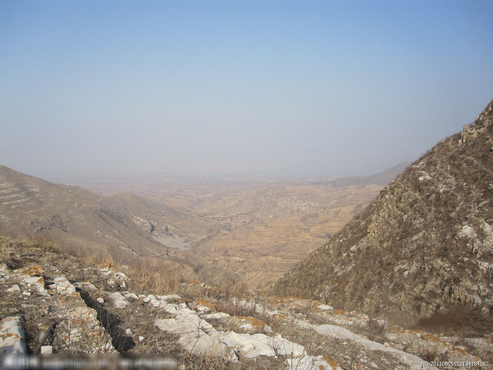
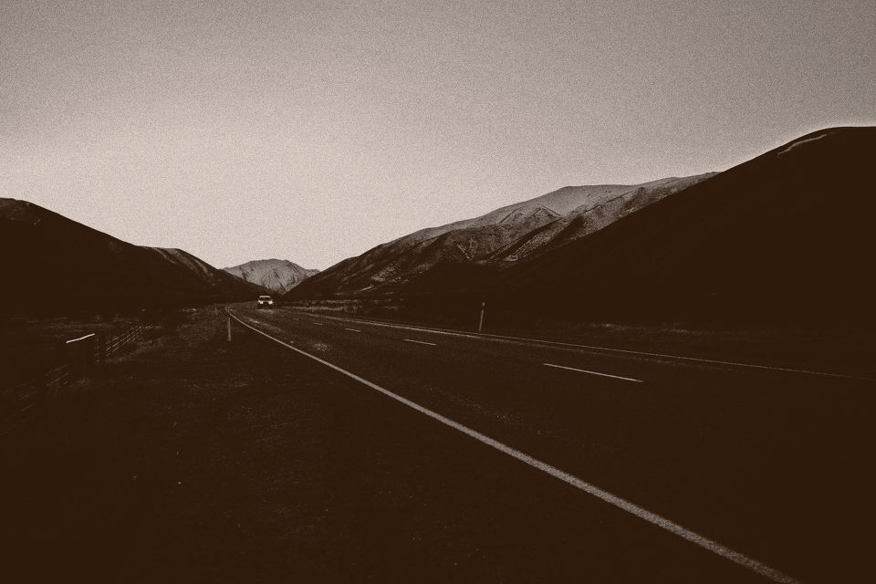
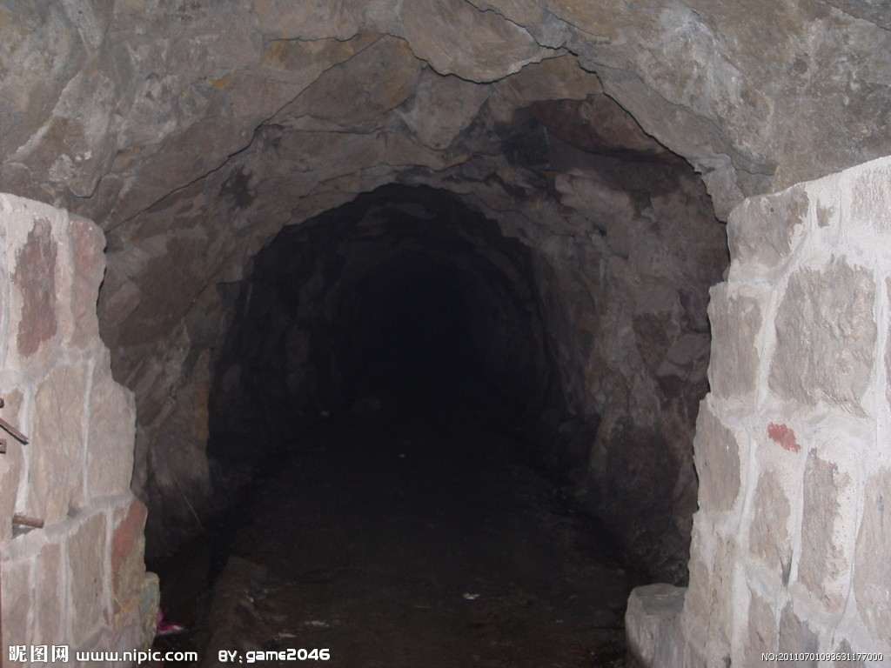
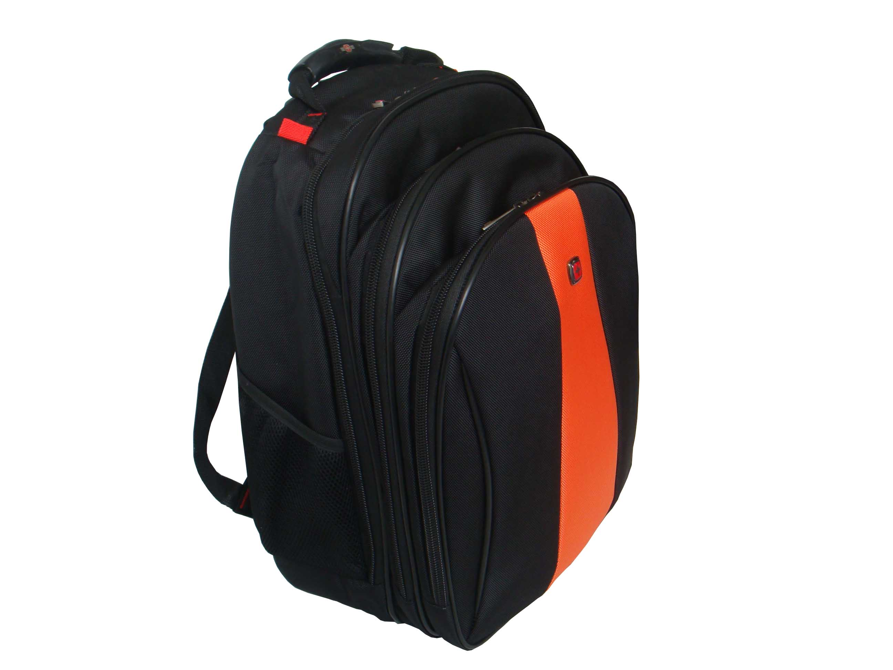
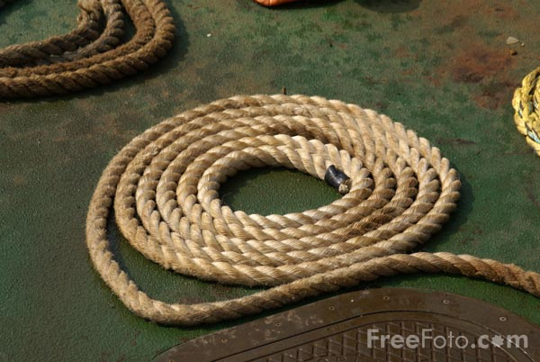

某年某月的某天早上，已经厌倦了城市生活的你决定来一次富有挑战精神的冒险，你决定去一座人迹罕至的高山，欣赏最美的日出。 
到达山脚下已是夜晚时分，这天晚上正是月黑风高之夜，山路崎岖难行不说，四周也被黑暗笼罩着，你在山脚下犹豫了许久，但最终你的冒险精神说服了你，决定在黑夜里来一次真正的探险...
你在崎岖不平的山路上艰难的行走着，四周一片昏暗，你当然没能看见前方脚下的一个巨大的山洞，于是当你的左脚伸进了他那长者的大嘴时，一声惊呼从洞里传了出来。。。 
哦，你发现了你的食物，狼吞虎咽地吃完以后，你发现了你的绳子，可惜山洞的内壁十分光滑。你的绳子完全没有了作用。几个星期后，路过的另一队探险者发现了你，你已经饿死在山洞中。
哦，你发现了你的绳子，但山洞的内壁十分光滑，你的绳子没有作用，于是你继续在山洞中寻找，发现了一个巨大的袋子，没错，那就是你的食物！
 把食物与绳子拴在一起，似乎可以做点什么。。。
你灵机一动，用绳子系住了食物，用力扔出了洞口，努力爬出了洞口。终于在第二天的清晨，看到了最美丽的日出！